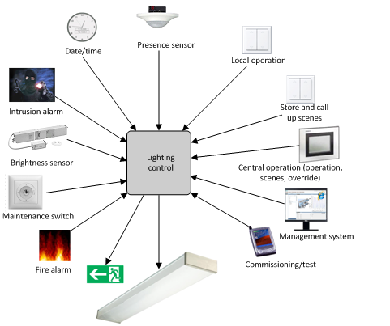
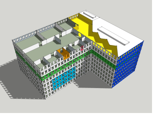
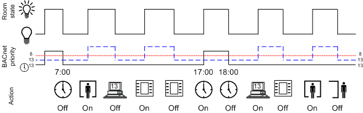
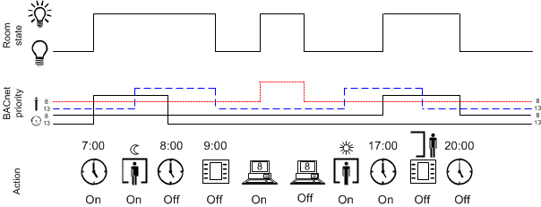
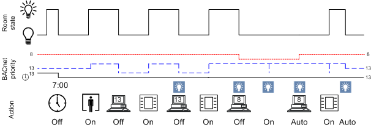
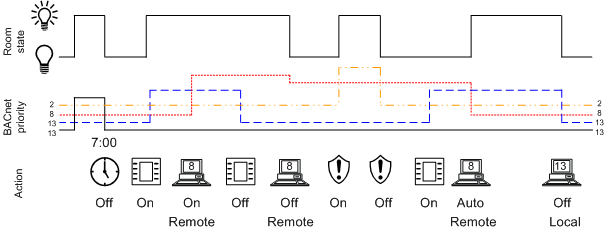
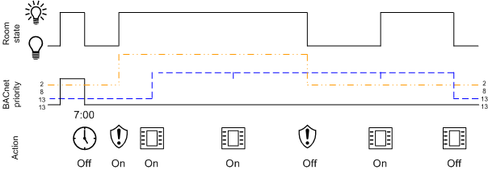
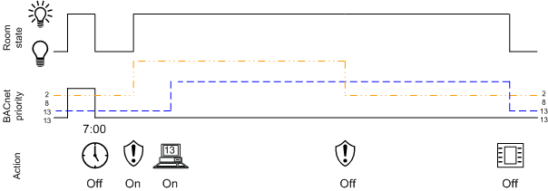

Lighting Control
Control requires a multitude of information via on external influences and user interaction to cover the requirements. The following illustration provides an overview of influences that may need to be considered to control lighting.

Positioning of lighting products in the building, how the rooms are used, and assignment of rooms to organizational units determine what information acts on lighting control, for example:
- A fire alarm acts on the entire building.
- A scheduler acts on all rooms for one renter.
- Local manual operation acts on all the lighting in a rooms or individual lighting fixtures.
 | Gray: Entire building |
Green/yellow: Rooms for a renter, for example, one floor. | |
Orange: Local manual operation |
The control concept is oriented on the following principles:
- Divided into independent functions that determine a command for lighting.
- Prioritization of individual functions.
- All functions and decisions are evaluated based on lighting state priorities.
Operating
Circumstances by Outside Influences | |||
Symbol | Mode | BACnet- Execution Order | Description |
Scheduler program | 13
| Schedulers normally write at priority 13 and can be overridden locally | |
8 | For specific applications (for example, room cleaning), a local operation can be overridden at priority 8 | ||
Scenes | 7 | Light switch that cannot be overridden by the management platform, must be programmed at priority 7 (for example, screening room). | |
13 | Light switches that can be overridden locally | ||
Presence detector (occupied) | 13 | Presence detectors always report/switch at priority 13; depending on the type, it is switched either immediately or dependent on the illuminance | |
Presence detector (not occupied) | 13 | Presence detector always reports/switches at priority 13. | |
Operating | 13 | Equal switching state as the local light switch. System operation with manual and automatic state | |
Extended operation | 8 | Overrides the local setting until the switching state is once again reset to automatic | |
Central functions | 8 | Equal switching state at priority 8 as on the management platform | |
13 | Equal switching state at priority 13 as on the management platform | ||
Local operation
An object is switched at priority 13 with the room operator unit. As a result, light switches, presence detectors, scheduler, or management platform (priority 13) are equal at switching. In other words, the last condition always applies.

Management Platform Operation
Management platform operation switches an object at priority 8 and overrides all switching procedures at priorities 9–16. Automatic at priority is set to out of service until the object is set to the next lower and used priority. A priority 13 or 15, pending at the object, is taken over.

Central Function
You can override or switch at the same priority multiple rooms in your building using the central function. The central functions are divided by building requirements:
- Renter
- Sections
- Use function (office/production)
- Floors
- Entire building
Central functions use the same BACnet priorities as local control so that override at priority 8 is permanent and temporary at priority 13. A temporary override can be overridden with the room operator unit.

Safety functions
A lighting group can only be switched on and off if the present priority is higher (remote >8 or local >13). Switching is only possible once the normal state is restored; switching is not possible as long as the priority is lower due to a safety function.
An active safety function is depicted as follows:


NOTE:
Manual switching during an active safety function only takes effect once the safety function is eliminated.
Remote Operation and Emergency
All pending commands are overridden on emergency lighting until the state is reset.

There are two cases for switching back from a higher to a lower priority:
- Operation via Local Switch
- Operation on the Management Platform
Operation via Local Switch
A local switch operated during an emergency has no impact on the state after the emergency. In other words, that the light is switched off after the emergency, and must then be switched on by the user via the local switch.
NOTE:
All commands executed locally in the room at priority 13 are rejected if a higher BACnet priority, for example 8, is pending, this means that the command is also not executed later.
Operation on the Management Platform
Lighting switched on via the management platform during emergency mode remains in this state even after emergency mode is eliminated.

BACnet Priorities for Lighting
The following table illustrates the priorities used in Desigo.
Priorities in Lighting | ||
Priority | Description | Example |
1 | Emergency mode 1 | ‒ |
2 | Emergency mode 2 | Lighting can be switched on during a fire alarm to light escape routes or in support of first responders. |
3 | Emergency mode 3 | ‒ |
4 | Protection mode 1 | ‒ |
5 | Protection mode 2 | ‒ |
6 | Minimum on/off | ‒ |
7 | Manual operating mode 1 |
|
8 | Manual operating mode 2 |
|
9‒12 | Automatic mode 1‒4 | ‒ |
13 | Manual operating mode 3 |
|
14 | Automatic mode 5 | ‒ |
15 | Automatic mode 6 | Program automation |
16 | Automatic mode 7 | ‒ |
NOTE:
All commands executed locally in the room at priority 13 are rejected if a higher priority, for example, priority 8, is pending. The command is also not executed at a later time.